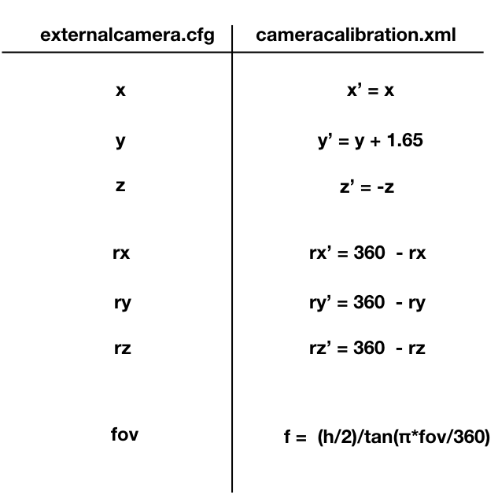

on
Camera calibration for Oculus Mixed Reality Capture guided by externalcamera.cfg
Summary
I tried to generate xml for Oculus Mixed Reality Capture from externalcamera.cfg.
Summary of the previous article
- I found Oculus MRC + VMC worked, but camera calibration is painful.
Again, be careful that this procedure may cause some trouble in your PC environments according to one previous report.
What I did
- Using CameraTool, I calibrated a web-cam and exported cameracalibration.xml.
- I read the xml and found out what the values mean.
- I wrote a script to generate the xml according to pre-exported externalcamera.cfg file.
What is possible.
You can set camera position, angle, and fov according to pre-exported externalcamera.cfg
Front Camera with larger fov.
Manually positioned camera.
It works.
Procedure
- Launch LIV (You may require it for virtual controller, but I’m not sure)
- Launch VMC
- Set up everything in VMC including the virtual camera, and then export externalcamera.cfg
- Quit LIV
- Compose your xml from externalcamera.cfg
- Launch CameraTool and let it read xml you made
- You will see your avatar wearing Oculus touch controllers.
- If so, it’s successful. Then quit cameratool.
- Launch your game with the option -directcomposition
- Enjoy
What differs from LIV
Controller goes inactive.
Probably, you cannot move avatar fingers and face expression in VMC. I guess this is because Steam VR goes background when Oculus game is on. Fortunately, trackers keep working.
I’m looking for methods to keep both SteamVR and OculusHome active.
No feedback screens that show synthesized images on HMD.
This may be possible with other tools, but I don’t have ideas at this moment.
Numeric relations between xml and cfg
cfg: (x,y,z) -> xml: (X,Y,Z)
- X = x
- Y = y + 1.65
- Z = -z
I don’t know what the interception 1.65 means, but this is required to fit the position of hands. This may depends on avatar, games, or other environments.
Realtion between fov and camera matrix
I read some documents for OpenCV and more.
A camera matrix is a 3x3 matrix
- m[1,1] = fx
- m[1,2] = 0 fixed value
- m[1,3] = cx
- m[2,1] = 0 fixed value
- m[2,2] = fy
- m[2,3] = cy
- m[3,1] = 0 fixed value
- m[3,2] = 0 fixed value
- m[3,3] = 1 fixed value
Anyway, these elements are listed as “fx 0 cx 0 fy cy 0 0 1” in the xml.
cx, cy corresnpond to center of the image. If 1280 x 960, cx=640 cy=480.
fx, fy are focal length in unit of pixels.
In unity, fov means vertical fov.
So I just cared of the realtion beween fov_y, fy, and the image height H.
- fy = H/(2*tan(fov_y/2))
- fx = fy
Rotation
It was really time-consuming to find out what those values mean.
Note that the value is coefficients of a unit (normalized) quaternion representing rotation and they are ordered as “i j k real”.
Summary

Conclusion
- I learnt a bit on rotation and coordinate transformation.
- Trial-and-error was almost everything.
- The xml for MRC can be generated from externalcamera.cfg
- My script file: extcam2cameralib
Softwares
- Virtual Motion Capture
- VMC is developed by @sh_akira
- Booth You can download it from here. You can also donate the devepoper.
- Official Page
- Nanome
- LIV
- VRoidStudio
References
- カメラパラメータ 床井研究室
- Unityとblenderの画角だか視野角だかField Of Viewだかそのへんの話
- Unity FOV
- OpenCV カメラキャリブレーション（鳥取大学） : Oculus CameraTool uses OpenCV.
- OpenCV カメラキャリブレーションと3次元再構成
- MathWorks カメラ キャリブレーションとは